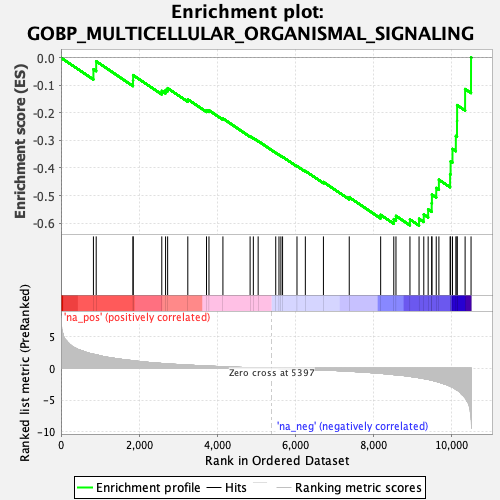
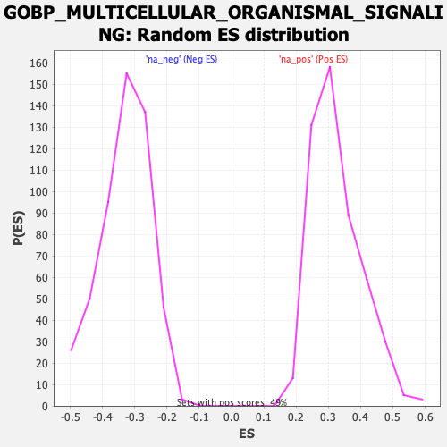

| Dataset | qlf.KOd4vsWTd4_gsea_score |
| Phenotype | NoPhenotypeAvailable |
| Upregulated in class | na_neg |
| GeneSet | GOBP_MULTICELLULAR_ORGANISMAL_SIGNALING |
| Enrichment Score (ES) | -0.6089632 |
| Normalized Enrichment Score (NES) | -1.8420538 |
| Nominal p-value | 0.0 |
| FDR q-value | 0.031798754 |
| FWER p-Value | 0.793 |

| SYMBOL | RANK IN GENE LIST | RANK METRIC SCORE | RUNNING ES | CORE ENRICHMENT | |
|---|---|---|---|---|---|
| 1 | RANGRF | 830 | 2.220 | -0.0420 | No |
| 2 | YWHAE | 901 | 2.121 | -0.0131 | No |
| 3 | ATP1A1 | 1843 | 1.190 | -0.0830 | No |
| 4 | ATP2A2 | 1847 | 1.185 | -0.0633 | No |
| 5 | SOD1 | 2580 | 0.764 | -0.1204 | No |
| 6 | NUP155 | 2677 | 0.729 | -0.1174 | No |
| 7 | TMEM65 | 2730 | 0.701 | -0.1105 | No |
| 8 | PAFAH1B1 | 3246 | 0.512 | -0.1511 | No |
| 9 | PRKACA | 3725 | 0.363 | -0.1907 | No |
| 10 | P2RX4 | 3788 | 0.346 | -0.1908 | No |
| 11 | CACNA1D | 4145 | 0.253 | -0.2206 | No |
| 12 | MTOR | 4841 | 0.099 | -0.2853 | No |
| 13 | ATP2B4 | 4924 | 0.085 | -0.2917 | No |
| 14 | CALM1 | 5047 | 0.061 | -0.3023 | No |
| 15 | FMR1 | 5497 | -0.015 | -0.3450 | No |
| 16 | AKAP9 | 5580 | -0.028 | -0.3524 | No |
| 17 | PDE4D | 5629 | -0.036 | -0.3563 | No |
| 18 | ZMPSTE24 | 5672 | -0.042 | -0.3596 | No |
| 19 | KCNMB4 | 6041 | -0.104 | -0.3930 | No |
| 20 | ATP2A1 | 6255 | -0.147 | -0.4109 | No |
| 21 | MEF2A | 6718 | -0.253 | -0.4508 | No |
| 22 | SRI | 7379 | -0.445 | -0.5064 | No |
| 23 | CALM2 | 8183 | -0.777 | -0.5701 | No |
| 24 | SLC9A1 | 8519 | -0.979 | -0.5856 | No |
| 25 | CALM3 | 8575 | -1.014 | -0.5738 | No |
| 26 | SCN11A | 8933 | -1.259 | -0.5868 | Yes |
| 27 | TRPM4 | 9166 | -1.476 | -0.5842 | Yes |
| 28 | CAMK2D | 9287 | -1.605 | -0.5687 | Yes |
| 29 | KCNH2 | 9399 | -1.729 | -0.5502 | Yes |
| 30 | ATP2A3 | 9490 | -1.858 | -0.5276 | Yes |
| 31 | JUP | 9496 | -1.874 | -0.4966 | Yes |
| 32 | ATP2B1 | 9606 | -2.054 | -0.4725 | Yes |
| 33 | ATP1B1 | 9674 | -2.171 | -0.4425 | Yes |
| 34 | GBA | 9961 | -2.800 | -0.4228 | Yes |
| 35 | FLNA | 9974 | -2.849 | -0.3761 | Yes |
| 36 | EHD3 | 10022 | -2.954 | -0.3309 | Yes |
| 37 | BIN1 | 10108 | -3.280 | -0.2840 | Yes |
| 38 | ATP1A3 | 10138 | -3.411 | -0.2294 | Yes |
| 39 | KCNA2 | 10141 | -3.429 | -0.1720 | Yes |
| 40 | PLEC | 10345 | -4.624 | -0.1138 | Yes |
| 41 | S1PR1 | 10497 | -7.694 | 0.0011 | Yes |
